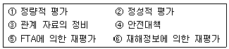
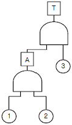
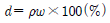
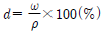
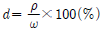
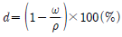

건설안전산업기사 (2010-09-05 기출문제)
1과목: 산업안전관리론
1. 다음 중 안전모의 구성요소에 해당하지 않는 것은?
- 턱끈
- 착장체
- 차단제
- 충격흡수재
(정답률: 67%)

2. 다음 중 위험예지훈련 기초 4라운드법의 진행방법에서 위험요인 발굴 및 합의와 결정을 하는 단계는?
- 대책수립
- 현상파악
- 본질추구
- 목표설정
(정답률: 54%)
3. 경보기가 울려도 전철이 오기까지 아직 시간이 있다고 스스로 판단하여 건널목을 건너다가 사고를 당한 것은 무엇에 의한 것인가?
- 억측판단
- 근도반응
- 생략행위
- 초조반응
(정답률: 75%)
4. A 사업장의 도수율이 4 이고, 연간총근로시간이 12,000,000 시간이라면 이 사업장에서는 연간 몇 건의 재해가 발생하였는가?
- 0.48
- 4.8
- 48
- 480
(정답률: 64%)
5. 다음 중 산업안전보건법상 안전ㆍ보건표지의 종류에 해당하지 않는 것은?
- 안내표지
- 경고표지
- 지시표지
- 보호표지
(정답률: 82%)
6. 다음 중 학습전이(transfer)의 조건으로 볼 수 없는 것은?
- 학습의 정도
- 시간적 간격
- 학습의 평가
- 학습자의 태도
(정답률: 56%)
7. 산업안전보건법상 자율검사프로그램을 인정받으려는 자가 자율검사프로그램 인정신청서에 첨부하여 자율검사 프로그램인정 업무를 위탁받은 기관에 제출하여야 하는 서류가 아닌 것은?
- 안전검사대상 유해ㆍ위험기계 등의 보유 현황
- 유해ㆍ위험기계 등의 검사 주기 및 검사기준
- 안전검사대상 유해ㆍ위험기계의 사용 실적
- 향후 2년간 검사대상 유해ㆍ위험기계 등의 검사 수행 계획
(정답률: 58%)
8. 다음 중 모럴서베이(Morale Survey)의 효용으로 볼 수 없는 것은?
- 조직 또는 구성원의 성과를 비교ㆍ분석한다.
- 종업원의 정화(Catharsis)작용을 촉진시킨다.
- 경영관리를 개선하는 데에 대한 자료를 얻는다.
- 근로자의 심리 또는 욕구를 파악하여 불안을 해소하고, 노동의욕을 높인다.
(정답률: 65%)
9. 다음 중 맥그리거(McGegor)의 Y 이론에 따른 관리처방에 해당하는 것은?
- 목표에 의한 관리
- 권위주의적 리더십 확립
- 경제적 보상체제의 강화
- 면밀한 감독과 엄격한 통제
(정답률: 59%)
10. 산업안전보건법상 산업안전ㆍ보건관련 교육과정 중 사업내 안전ㆍ보건교육에 해당하지 않는 것은?
- 특별안전ㆍ보건교육
- 안전관리자 신규ㆍ보수 교육
- 관리감독자 정기안전ㆍ보건교육
- 채용 시의 교육 및 작업내용 변경 시의 교육
(정답률: 57%)
11. 재해발생 요인 중 불안전한 행동으로 볼 수 없는 것은?
- 위험한 장소의 접근
- 보호구의 미착용
- 권한 없는 조작
- 작업설비의 결함
(정답률: 73%)
12. 다음 중 감각차단현상이 발생하기 가장 쉬운 경우는?
- 복잡한 업무가 장시간 지속될 때
- 정신적인 업무가 장시간 지속될 때
- 단조로운 업무가 장시간 지속될 때
- 주의력의 배분을 요하는 작업을 장시간 지속할 때
(정답률: 67%)
13. 비통제의 집단행동 중 폭동과 같은 것을 말하며, 군중(crowd)보다 합의성이 없고, 감정에 의해서만 행동하는 특성을 무엇이라 하는가?
- 모브(Mob)
- 패닉(Panic)
- 모방(Imitation)
- 심리적 전염(Mental Epidemic)
(정답률: 68%)
14. 하인리히의 재해발생 구성비율을 올바르게 나타낸 것은?(단, 비율은 중상해 : 경상해 : 무상해사고 순서이다.)
- 1 : 29 : 300
- 1 : 29 : 270
- 1 : 10 : 30
- 10 : 30 : 600
(정답률: 74%)
15. 다음 중 산업안전보건법에 따라 안전ㆍ보건진단을 받아 안전보건개선계획을 수립ㆍ제출하도록 명할 수 있는 사업장이 아닌 것은?
- 산업재해율이 같은 업종 평균 산업재해율의 2배인 사업장
- 직업병에 걸린 사람이 연간 1명 발생한 사업장
- 작업환경 불량, 화재ㆍ폭발 또는 누출사고 등으로 사회적 물의를 일으킨 사업장
- 산업재해율이 같은 업종의 규모별 평균 산업재해율보다 높은 사업장 중 사업주가 안전ㆍ보건조치 의무를 이행하지 아니하여 중대재해가 발생한 사업장
(정답률: 78%)
16. 하인리히가 제시한 재해손실비의 1 : 4원칙에 관한 설명으로 옳은 것은?
- 손실비용 중 치료비가 1일 경우 보상비는 4 이다.
- 직접손실비용이 1일 경우 간접손실비용은 4 이다.
- 직접손실비용이 1일 경우 총 재해손실비용은 4 이다.
- 총 재해손실비용 시몬즈 방식에 의한 총 재해손실 비용의 1/4 정도이다.
(정답률: 58%)
17. 안전교육방법 중 자신의 목표를 외부에 구체적으로 실현하고 형상화하기 위하여 스스로가 계획을 세워서 수행하는 학습활동으로 이루어지는 형태는?
- Case study
- Project method
- Panel discussion
- Program self-instruction method
(정답률: 50%)
18. 다음 중 무재해 운동의 추진을 위한 3요소에 속하지 않는 것은?
- 모든 위험잠재요인의 해결
- 최고경영자의 경영자세
- 안전 활동의 라인(Line)화
- 직장 소집단의 자주활동 활성화
(정답률: 61%)
19. 기업 내 정형교육으로 감독자를 대상으로 실시하는 것으로 작업을 가르치는 법, 작업의 개선방법 및 대인관계능력 등을 주로 교육하는 것은?
- TWI(Training Within Industry)
- ATT(American Telephone & Telegram co.)
- MTP(Management Training program)
- CSS(Civil Communication Section)
(정답률: 50%)
20. 다음 중 자신의 약점이나 무능력, 열등감을 위장하여 유리하게 보호함으로써 안정감을 찾으려는 방어적 적응기제에 해당하는 것은?
- 보상
- 고립
- 퇴행
- 억압
(정답률: 67%)
2과목: 인간공학 및 시스템안전공학
21. 인간공학에서 사용되는 인간 기준의 4가지 유형에 속하지 않는 것은?
- 사고빈도
- 인간성능 척도
- 생리학적 지표
- 작업 만족도
(정답률: 42%)
22. 반경 20cm의 조종구(ball control)를 30° 움직였을 때 표시장치가 2cm 이동하였다면 통제표시비(C/D비)는 약 얼마인가?
- 8.25
- 7.73
- 6.27
- 5.24
(정답률: 44%)
23. 일반적으로 침대의 길이를 설계할 때 인체계측자료의 어느 원칙을 응용하는 것이 가장 적절한가?
- 조절식 설계
- 최소 집단치를 위한 설계
- 최대 집단치를 위한 설계
- 평균치를 기준으로 한 설계
(정답률: 62%)
24. 안전성 평가의 기본원칙이 다음과 같을 때 단계별로 올바르게 나열한 것은?

- ③ → ① → ④ → ② → ⑥ → ⑤
- ③ → ② → ① → ④ → ⑥ → ⑤
- ③ → ④ → ① → ② → ⑤ → ⑥
- ③ → ④ → ② → ① → ⑥ → ⑤
(정답률: 58%)
25. 다음 중 시스템 안전관리에 관한 사항으로 틀린 것은?
- 시스템 안전에 필요한 사항의 고정
- 안전활동의 계획, 조직 및 관리
- 생산성 향상을 위한 중점 관리
- 다른 시스템 프로그램 영역과의 조정
(정답률: 59%)
26. 자동제어 중 feed back 제어에 관한 설명으로 틀린 것은?
- 일단 동작 후 그 이상의 조종이 없거나 조종이 불가능한 체계이다.
- 폐회로(closed-loop)제어라 한다.
- 제어의 목표치와 결과치를 비교한다.
- 자동화기기와 같이 시간적으로 연속적인 조정을 필요로 한다.
(정답률: 44%)
27. 다음 중 항공 자세 표시장치의 형태로 볼 수 없는 것은?
- 빈도 통합형
- 항공기 이동형
- 빈도 분리형
- 지평선 이동형
(정답률: 35%)
28. 다음 FT도에서 정상사상 A의 발생확률은 약 얼마인가?(단, ①은 0.1 ②는 0.⑤ ③은 0.08의 발생확률을 가진다.)

- 0.0004
- 0.0008
- 0.0013
- 0.0024
(정답률: 45%)
29. FTA의 논리게이트 중에서 여러 개의 입력 사상이 정해진 순서에 따라 순차적으로 발생해야만 결과가 출력되는 것은?
- 억제 게이트
- 조합 AND 게이트
- 배타적 OR 게이트
- 우선적 AND 게이트
(정답률: 51%)
30. 결함수분석법에 있어 정상사상(top event)을 일으키지 않도록 하는 필요 최소한의 기본사상의 집합을 무엇이라 하는가?
- 컷셋(cut set)
- 패스셋(path set)
- 미니멀 컷셋(minimal cur set)
- 미니멀 패스셋(minimal path set)
(정답률: 40%)
31. 다음 중 산업안전보건법에 따라 상시 직업에 종사하는 장소에서 보통작업을 하고자 할 때 작업면의 최소 조도(lux)로 옳은 것은? (단, 작업장은 일반적인 작업장소이며, 감광 재료를 취급하지 않는 장소이다.)
- 75
- 150
- 300
- 750
(정답률: 59%)
32. 다음 중 귀의 구조를 설명한 내용으로 틀린 것은?
- 외이(Outer Ear)는 외이도, 귓바퀴로 이루어져 있다.
- 중이(Middle Ear)는 고막, 추골, 침골, 등골로 연결되어 있다.
- 내이(Inner Ear)는 난원창, 청신경으로 이루어져 있다.
- 달팽이관(Cochlea)은 나선형으로 생긴 관으로 기저막이 진동한다.
(정답률: 60%)
33. 다음 중 국소적인 근육활동을 측정하는데 사용되는 생화학적 척도는?
- 뇌전도(EEG)
- 근전도(EMG)
- 심전도(ECG)
- 점멸융합주파수(VFF)
(정답률: 63%)
34. 다음 중 조도(調度)에 관한 설명으로 가장 적절한 것은?
- 광원의 밝기를 나타낸다.
- 작업면의 밝기를 나타낸다.
- 광원에 의한 눈부심이다.
- 1촉광이 발하는 광량(光量)이다.
(정답률: 47%)
35. 시스템안전 분석방법 중 관리, 설계, 생산, 보전 등 전반적인 광범위한 분야에서 안전성을 확보하기 위한 기법으로 이미 상당한 안전이 확보되어 있는 장소에서 더 고도의 안전 달성을 목적으로 하는 것은?
- ETA
- FMEA
- MORT
- THERP
(정답률: 57%)
36. 다음 중 인간의 과오를 평가하기 위한 정량적 해석 방법은?
- THERP
- FTA
- CA
- PHA
(정답률: 61%)
37. 손과 같은 신체부위를 반복적으로 사용하기 때문에 발생하는 질환을 무엇이라 하는가?
- CTD
- ENG
- VFF
- EEG
(정답률: 50%)
38. 임의로 선정된 순간(시간)마다 하나 이상의 작업자 또는 기계작업을 관찰하여 그 결과로 실제 작업시간과 지체시간을 총요소시간의 비율을 파악하려는 확률적 관측방법에 의하여 표준시간을 설정하는 기법을 무엇이라 하는가?
- Work Factor
- Work Sampling
- Method Time Measurement
- Rapid Upper Limb Assessment
(정답률: 34%)
39. 평균고장시간(MTTF)이 4×108 시간인 요소 2개가 병렬 체계를 이루었을 때 이 체계의 수명은 얼마인가?
- 2×108시간
- 4×108시간
- 6×108시간
- 8×108시간
(정답률: 43%)
40. 다음은 전신진동이 인간의 성능에 미치는 일반적인 영향으로 틀린 것은?
- 진동은 진폭에 비례하여 시력을 손상시키며, 10~25Hz의 경우 가장 심하다.
- 진동은 진폭에 비례하여 추적 능력을 손상시키며, 5Hz 이하의 낮은 진동수에서 가장 심하다.
- 안정되고 정확한 근육 조절을 요하는 작업은 진동에 의해서 저하된다.
- 반응시간, 감시, 형태 식별 등 주로 중앙 신경 처리에 의한 임무는 진동의 영향을 심하게 받는다.
(정답률: 44%)
3과목: 건설시공학
41. 혼화제인 AE제가 콘크리트의 물성에 미치는 영향에 대한 설명 중 옳지 않은 것은?
- 동결융해에 대한 저항성이 크게 된다.
- 철근과의 부착강도는 커지는 경향이 있다.
- 시공성이 좋아진다.
- 단위 수량이 적게 된다.
(정답률: 61%)
42. 콘크리트를 수직부재인 기둥과 벽, 수평 부재인 보, 슬래브를 구획하여 타설하는 공법을 무엇이라 하는가?
- V.H 분리타설 공법
- N.H 분리타설 공법
- H.S 분리타설 공법
- H.N 분리타설 공법
(정답률: 65%)
43. 바닥판, 보 밑 거푸집 설계에서 고려하는 하중에 속하지 않는 것은?
- 굳지 않은 콘크리트 중량
- 작업하중
- 충격하중
- 측압
(정답률: 66%)
44. 다음 중 도급 금액 결정방법에 따른 도급방식의 종류에 해당하지 않는 것은?
- 정액도급
- 단가도급
- 분할도급
- 실비청산 보수가산도급
(정답률: 47%)
45. 역타공법(top-down method)과 관련된 내용으로 옳지 않은 것은?
- 지하굴착 공사장에는 중장비 때문에 급배기환기시설이 필요하다.
- 기둥 천공시 슬라임 처리가 완벽해야 한다.
- 지하연속벽과 구조체와의 연결철근의 위치가 정확히 유지되어 있어야 한다.
- 한 현장에 지하연속벽과 강성이 다른 흙막이벽을 병행 조성하는 것이 안전상 유리하다.
(정답률: 70%)
46. 건설공사 완료 후 불량시공부분에 재시공을 보장하기 위하여 공사발주처 등에 예치하는 공사금액의 명칭은?
- 입찰보증금
- 계약보증금
- 지체보증금
- 하자보증금
(정답률: 85%)
47. 기초보강공사 중 언더피닝(under pinning)공법으로 보강해야 할 경우가 아닌 것은?
- 기존건물에 근접하여 구조물을 구축할 경우
- 기존건물의 파일머리보다 깊은 구조물을 건설할 경우
- 지하수면의 이동이 발생하거나 파일두부가 파손되어 지층내력이 약화된 경우
- 기존건물의 기초가 침하하여 보나 기둥을 보강할 경우
(정답률: 45%)
48. 기초콘크리트에 앵커볼트를 묻을 구멍을 내 두었다가 큰 콘크리트가 경화한 뒤 볼트에 그라우트 모르타르로 충전하면서 고정하는 공법으로, 소규모 앵커볼트 매입에 적당한 것은?
- 고정매입공법
- 가동매입공법
- 전면바름공법
- 전면그라우트공법
(정답률: 46%)
49. 450m3의 콘크리트를 타설할 경우 강도시험용 1회의 공시체는 몇 m3 마다 제작하는가?
- 30m3
- 50m3
- 100m3
- 150m3
(정답률: 66%)
50. 철골조 용접공작에서 용접봉의 피복재 역할로 옳지 않은 것은?
- 함유 원소를 이온화하여 아크를 안정시킨다.
- 용착 금속에 합금 원소를 가한다.
- 용착 금속의 산화를 촉진하여 고열을 발생시킨다.
- 용융 금속의 탈산, 정련을 한다.
(정답률: 68%)
51. 토공사에 사용되는 기계에 대한 설명 중 옳지 않은 것은?
- 파워쇼벨(power shovel)은 위치한 지면보다 높은 곳의 굴착에 유리하다.
- 드래그쇼벨(drag shovel)은 주로 협소한 구역에서 지반보다 낮은 곳을 굴착하는데 사용한다.
- 클램쉘(clam shell)은 연약 지반에는 사용이 가능 하나 경질층에는 부적당하다.
- 드래그라인(drag line)은 배토판을 부착시켜 정지 작업에 사용된다.
(정답률: 55%)
52. 다음 중 말뚝박기 기계인 디젤해머(diesel hammer)의 일반적인 설명으로 옳지 않은 것은?
- 박는 속도가 빠르다.
- 타격음이 작다.
- 타격에너지가 크다.
- 운전이 용이하다.
(정답률: 80%)
53. 시공과정상 불가피하게 콘크리트를 이어치기할 때 발생하는 시공불량 이음부를 무엇이라고 하는가?
- 컨스트럭션 조인트(construction jiont)
- 콜드 조인트(cold joint)
- 컨트롤 조인트(control joint)
- 익스팬션 조인트(expansion joint)
(정답률: 69%)
54. 웰 포인트 공법에 관한 설명으로 옳지 않은 것은?
- 기초공사에서 지반을 강화하기 위한 배수공법이다.
- 흙막이의 토압이 경감된다.
- 기초파기, 기초공사 등을 무수상태에서 시공하는 등의 목적으로 지하수위를 낮추는 공법이다.
- 사질지반보다 점토지반에서 탈수효과가 크다.
(정답률: 54%)
55. 인접건축물의 벽체나 슬래브 바닥에 설치하여 구조물의 변형상태를 측정하는 장비는?
- Water level meter
- Load cell
- Piezo meter
- Title meter
(정답률: 52%)
56. 건설공사의 입찰 및 계약의 순서로 옳은 것은?
- 입찰통지→현장설명→입찰→개찰→낙찰→계약
- 현장설명→입찰통지→입찰→개찰→낙찰→계약
- 현장설명→입찰통지→입찰→낙찰→개찰→계약
- 입찰통지→입찰→개찰→낙찰→현장설명→계약
(정답률: 71%)
57. 철근콘크리트 공사에서 철근의 정착위치로서 옳지 않은 것은?
- 기둥의 주근은 기초에
- 바닥철근은 보 또는 벽체에
- 보의 주근은 벽체에
- 벽 철근은 기둥ㆍ보 또는 바닥판에
(정답률: 55%)
58. 철골공사의 철골부재 용접에서 용접결함이 아닌 것은?
- 언더컷(under cut)
- 오버랩(over lap)
- 위핑(weeping)
- 블로우홀(blow hole)
(정답률: 80%)
59. 다음 중 시방서에 기재하는 사항이 아닌 것은?
- 재료, 장비, 설비의 유형과 품질
- 조립, 설치, 세우기의 방법
- 도면의 도해적 표현
- 시험 및 코드 요건
(정답률: 59%)
60. 콘크리트 양생법 중 170~215℃ 사이의 온도에 8.0kg/cm2 정도의 증기압을 가하여 조기에 재령 1년의 강도와 거의 같게 할 수 있는 것은?
- 봉합양생
- 습윤양생
- 전기양생
- 오토클레이브양생
(정답률: 61%)
4과목: 건설재료학
61. 합성수지와 그 용도의 조합으로서 부적당한 것은?
- 멜라민수지 - 천장판
- 아크릴수지 - 채광판
- 폴리에스테르수지 - 타일
- 폴리스티렌수지 - 발포보온판
(정답률: 52%)
62. 목재의 함수율에 관한 설명으로 옳지 않은 것은?
- 함수율이 30% 이상에서는 함수율의 증감에 따라 강도의 변화가 거의 없다.
- 목재의 진비중은 일반적으로 2.54 정도이다.
- 기건재의 함수율은 15% 정도이다.
- 함수율 30% 정도를 섬유포화점이라 한다.
(정답률: 49%)
63. 다음 중 돌로마이트 플라스터에 대한 설명으로 옳지 않은 것은?
- 돌로마이트에 모래, 여물을 섞어 반죽한 것이다.
- 소석회보다 점성이 크다.
- 회반죽에 비하여 최종강도는 작지만 착색이 쉽다.
- 건조수축이 커서 균열이 생기기 쉽다.
(정답률: 52%)
64. 시멘트의 저장과 관련된 기준으로 옳지 않은 것은?
- 3개월 이하 단기간 저장한 시멘트는 굳은 덩어리가 있더라도 사용이 가능하다.
- 시멘트를 쌓아올리는 높이는 13포대 이하로 하는 것이 바람직하다.
- 시멘트의 온도는 일반적으로 50℃ 정도 이하를 사용하는 것이 좋다.
- 시멘트는 방습적인 구조로 된 사일로 또는 창고에 품종별로 구분하여 저장하여야 한다.
(정답률: 75%)
65. 다음 중 그물유리라고도 하며 주로 방화 및 방재용으로 사용되는 유리는?
- 강화유리
- 망입유리
- 페어유리
- 열선반사유리
(정답률: 76%)
66. 매스콘크리트에서 균열제어를 하기 위한 대책으로 옳지 않은 것은?
- 콘크리트 온도상승을 적게 한다.
- 굵은 골재의 최대치수는 건조수축 등을 고려하여 되도록 작은 값을 사용한다.
- 급격한 온도 변화를 피한다.
- 저발열성 시멘트를 사용한다.
(정답률: 77%)
67. 속빈 콘크리트블록(KS F 4002)에 대한 설명 중 옳지 않은 것은?
- 구멍을 제외한 실제 단면적에 가해진 하중으로 압축 강도를 구한다.
- A종 블록의 기건비중은 1.7 미만이다.
- C종 블록의 압축강도는 8MPa 이상이다.
- 모양 및 치수에 따라 기본 블록과 이형블록으로 나뉜다.
(정답률: 47%)
68. 각종 색유리의 작은 조각을 도안에 맞추어 절단하여 조합해서 만든 것으로 성당의 창 등에 사용되는 유리제품은?
- 내열유리
- 유리타일
- 샌드블라스트유리
- 스테인드글라스
(정답률: 65%)
69. 목면ㆍ마사ㆍ양모ㆍ폐지 등을 원료로 하여 만든 원지에 스트레이트 아스팔트를 먹인 방수지로 주로 아스팔트 방수 중간층재로 이용되는 것은?
- 콜타르
- 아스팔트 프라이머
- 아스팔트 펠트
- 합성 고분자 루핑
(정답률: 71%)
70. 습기가 있는 콘크리트나 모르타르에 알루미늄 섀시를 직접 닿지 않도록 해야 하는데 그 이유는?
- 연질이며 강도가 낮아서
- 내수성이 약해서
- 산, 알칼리 등에 쉽게 침식되어서
- 열팽창률이 달라서
(정답률: 78%)
71. 천장에 달대를 고정시키기 위하여 사전에 매설하는 철물에 해당하는 것은?
- 인서트(insert)
- 드라이브 핀(drive pin)
- 익스팬션 볼트(expansion bolt)
- 스크류 앵커(screw anchor)
(정답률: 62%)
72. 콘크리트의 수화속도에 영향을 미치는 인자가 아닌 것은?
- 혼화재료
- 물시멘트비
- 양생온도
- 사용자갈의 크기
(정답률: 75%)
73. 석고계 플라스터 중 가장 경질이며 벽 바름 재료뿐만 아니라 바닥 바름 재료로도 사용되는 것은?
- 킨스시멘트
- 혼화석고 플라스터
- 회반죽
- 돌라마이트 플라스터
(정답률: 51%)
74. 무스프탈산과 글리세린의 순수 수지를 각종 지방산, 유지, 천연수지로 변성한 것으로 내후성, 밀착성, 가소성이 좋고, 내수ㆍ내알칼리성이 부족한 열경화성 수지는?
- 푸란 수지
- 폴리에틸렌 수지
- 불소 수지
- 알키드 수지
(정답률: 37%)
75. 현무암, 안산암, 사문암 등의 원료를 고열로 용융시킨 후 세공으로 분출시키면서 면상으로 만들어 냉수나 압축공기로 냉각시켜 섬유화한 것은?
- 암면
- 펄라이트
- 석면
- 유리섬유
(정답률: 44%)
76. 규산칼슘과 단열재에 대한 설명으로 옳은 것은?
- 용융유리를 흡착법 등으로 수 ㎛의 가는 섬유로 만든 것
- 각종 슬래그에 석회암을 첨가하여 가는 섬유형태로 만든 것
- 주원료인 식물섬유를 쪄서 분해한 밀도 0.4미만인 것
- 내열성과 내파손성이 우수하여 철골내화피복으로 사용되는 것
(정답률: 58%)
77. 다음 중 골재의 실적률을 옳게 나타낸 식은? (단, 실적률 : d, 절대건조상태의 골재의 비중 : p, 단위용 적중량 : w)




(정답률: 50%)
78. 대리석에 대한 설명으로 옳지 않은 것은?
- 석회석이 변화되어 결정화한 것이다.
- 대리석은 강도가 높아 표면 광택이 좋고 내산성, 내마모성이 크다.
- 석질이 치밀하고 외관이 미려하다.
- 트래버틴은 대리석의 일종이다.
(정답률: 52%)
79. 담금질을 한 강에 인성을 주기 위하여 변태점 이하의 적당한 온도에서 가열한 다음 냉각시키는 조작을 의미하는 것은?
- 풀림
- 불림
- 뜨임질
- 사출
(정답률: 55%)
80. 용융해가 쉽고, 산에는 강하나 알칼리에 약한 특성이 있으며 건축 일반용 창호유리, 병유리에 자주 사용되는 유리는?
- 소다석회 유리
- 칼륨석회 유리
- 보헤미아 유리
- 납유리
(정답률: 64%)
5과목: 건설안전기술
81. 다음 중 스크레이퍼의 용도로 가장 거리가 먼 것은?
- 적재
- 운반
- 하역
- 양중
(정답률: 54%)
82. 달비계에 사용하는 달기와이어로프의 사용기준에 대한 설명으로 옳지 않은 것은?
- 와이어로프의 한 꼬임에서 끊어진 소선의 수가 8% 이상 인 것은 사용할 수 없다.
- 지름의 감소가 공칭지름의 7%를 초과하는 것은 사용할 수 없다.
- 심하게 변형, 부식된 것은 사용할 수 없다.
- 이음매가 있는 것은 사용할 수 없다.
(정답률: 60%)
83. 붕괴 등에 의한 위험방지에 관한 기준으로 옳지 않은 것은?
- 인근의 항타 작업으로 침하가 발생하여 구축물의 붕괴위험이 예상될 경우 안전성평가를 실시한다.
- 갱내에서의 측벽의 붕괴에 의하여 근로자에게 위험을 미칠 우려가 있을 때에는 지보공을 설치한다.
- 높이가 2m 이상인 장소로부터 물체를 투하하는 때에는 투하설비를 설치하거나 감시인을 배치한다.
- 작업으로 인하여 물체가 낙하 또는 비래할 위험이 있을 때에는 방호선반의 설치 등 필요한 조치를 한다.
(정답률: 50%)
84. 부두, 안벽 등 하역작업을 하는 장소에 대하여 부두 또는 안벽의 선을 따라 통로를 설치할 때 통로의 최소 폭은?
- 70cm
- 80cm
- 90cm
- 100cm
(정답률: 69%)
85. 다음 중 비탈면 붕괴 방지를 위한 붕괴방지공법과 가장 거리가 먼 것은?
- 배토공법
- 압성토공법
- 앵커에 의한 방지공법
- 웰포인트 공법
(정답률: 63%)
86. 날씨 등의 이유로 비계를 변경한 후 해야 하는 비계의 점검사항에 해당하지 않는 것은?
- 기둥의 침하ㆍ변형ㆍ변위 또는 흔들림 상태
- 손잡이의 탈락여부
- 격벽의 설치여부
- 발판재료의 손상여부 및 부착 또는 걸림상태
(정답률: 62%)
87. 다음 중 구조물의 해체작업을 위한 기계, 기구가 아닌것은?
- 쇄석기
- 데릭
- 압쇄기
- 철제 해머
(정답률: 58%)
88. 철골 작업 시 강우량에 대해 작업을 중단하는 기준은?
- 시간당 1mm 이상인 경우
- 시간당 5mm 이상인 경우
- 시간당 10mm 이상인 경우
- 시간당 15mm 이상인 경우
(정답률: 65%)
89. 차량계 하역운반기계 등을 사용하여 작업을 하는 때에는 작업지휘자를 지정하여야 하는데 고소작업대의 경우에는 최소 몇 m 이상의 높이에서 사용하는 경우에 작업지휘자를 지정해야 하는가?
- 3m
- 5m
- 8m
- 10m
(정답률: 30%)
90. 콘크리트 슬럼프 시험 방법에 대한 설명 중 옳지 않은 것은?
- 슬럼프 시험기구는 강제평판, 슬럼프 테스트 콘, 다짐막대, 측정기기로 이루어진다.
- 콘크리트 타설 시 작업의 용이성을 판단하는 방법이다.
- 슬럼프 콘에 비빈 콘크리트를 같은 양의 3층으로 나누어 25회씩 다지면서 채운다.
- 슬럼프는 슬럼프콘을 들어 올려 강제평판으로부터 콘크리트가 무너져 내려앉은 높이까지의 거리를 mm로 표시한 것이다.
(정답률: 38%)
91. 다음 중 유해ㆍ위험방지계획서 제출 시 첨부해야하는 서류와 가장 거리가 먼 것은?
- 건축물 각 층의 평면도
- 기계ㆍ설비의 배치도면
- 제조공정 및 기계ㆍ설비 규모
- 비상조치계획서
(정답률: 33%)
92. 해체공사에 사용되는 핸드 브레이커의 장점에 대한 설명으로 옳지 않은 것은?
- 방진마스크, 보안경등이 불필요하며 수동공구에 비하여 작업 능률이 좋다.
- 진동, 파편의 비산이 적으며 위험성이 적다.
- 운반이 편리하며 다목적으로 사용이 가능하다.
- 좁은 장소나 구조물 파쇄에 유리하고 타공법과 병행 하여 사용할 수 있다.
(정답률: 48%)
93. 현장 안전점검 시에 흙막이 지보공의 정기점검 사항과 가장 거리가 먼 것은?
- 부재의 손상ㆍ변형ㆍ부식ㆍ변위 및 탈락의 유무와 상태
- 부재의 설치방법과 순서
- 버팀대의 긴압의 정도
- 부재의 접속부ㆍ부착부 및 교차부의 상태
(정답률: 59%)
94. 추락에 의하여 근로자에게 위험을 미칠 우려가 있는 때에는 비계를 조립하는 등의 방법에 의하여 작업발판을 설치하여야 하는 작업장소의 최소 높이기준은?
- 1m 이상
- 2m 이상
- 3m 이상
- 4m 이상
(정답률: 63%)
95. 안전난간의 구조 및 설치요건에서 금속제 파이프 계단의 난간은 지름이 최소 얼마 이상 이어야 하는가?
- 1.5cm
- 2.0cm
- 2.7cm
- 4.5cm
(정답률: 56%)
96. 다음 중 가설통로 설치 시 준수사항에 대한 기준으로 옳지 않은 것은?
- 경사 15°를 초과하는 때에는 미끄러지지 아니하는 구조로 할 것
- 추락의 위험이 있는 장소에는 안전난간을 설치할 것
- 수직갱에 가설된 통로의 길이가 15m 이상인 때에는 10m 이내마다 계단참을 설치할 것
- 건설공사에 사용하는 높이 8m 이상인 비계다리에는 5m 이내마다 계단참을 설치할 것
(정답률: 62%)
97. 철골공사의 작업조건과 재해방지설비를 짝지어진 것 중 옳지 않은 것은?
- 추락자를 보호할 수 있는 것으로서 작업대 설치가 어렵거나 개구부 주위로 난간설치가 어려운 것 - 추락방지용 방망
- 작업자의 신체를 보호하기 위한 것으로서 안전한 작업대나 난간설비를 할 수 없는 곳 - 안전대
- 불꽃 비산 방지를 위한 것으로 용접, 용단을 수반하는 작업시 - 안전모
- 상부에서 낙하된 것을 막는 것으로서 철골 건립, 볼트 체결 등의 작업 시 - 방호울타리
(정답률: 61%)
98. 히빙(Heaving)의 방지 대책 중 옳지 않은 것은?
- 굴착주변의 상재하중을 증가시킨다.
- 시트파일 등의 근입심도를 검토한다.
- 케이슨 공법을 채택한다.
- 굴착주변을 웰포인트 공법과 병행한다.
(정답률: 39%)
99. 보 또는 슬래브의 거푸집 작업 시 주의 사항이 아닌 것은?
- 모서리는 정확하게 조립되어야 한다.
- 하부에 청소구가 있는가를 확인한다.
- 중앙부는 약간의 솟음을 두어야 한다.
- 벌어짐에 견딜 수 있도록 견고해야 한다.
(정답률: 55%)
100. 이동식비계를 조립하여 작업을 할 때의 준수사항과 거리가 먼 것은?
- 비계의 최상부에서 작업을 할 때에는 안전난간을 설치할 것
- 이동식비계의 바퀴에는 뜻밖의 갑작스러운 이동 또는 전도를 방지하기 위하여 브레이크ㆍ쐐기 등으로 바퀴를 고정시킨 다음 비계의 일부를 견고한 시설물에 고정하거나 지지물을 설치하는 등의 조치를 할 것
- 승강용 사다리는 견고하게 설치할 것
- 지주부재와 수평면과의 기울기를 75° 이하로 하고 지주부재 사이를 고정시키는 보조부재를 설치할 것)
(정답률: 62%)